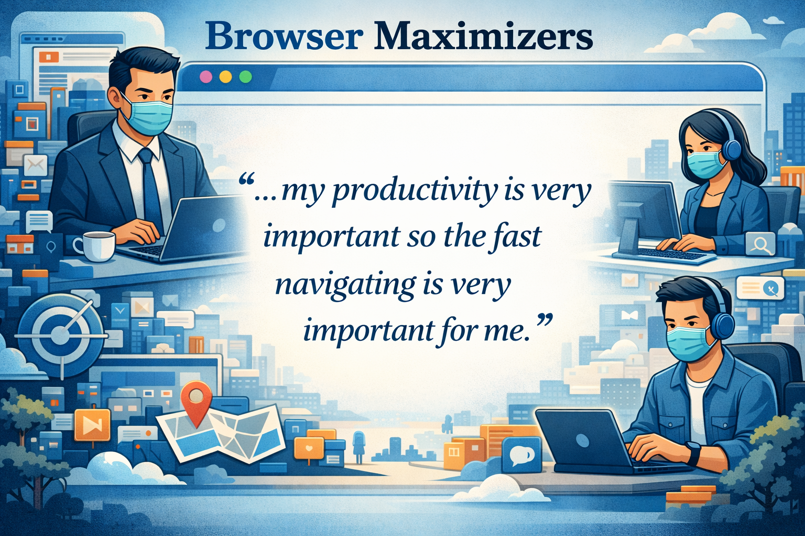
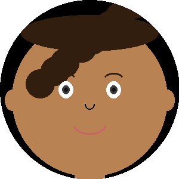
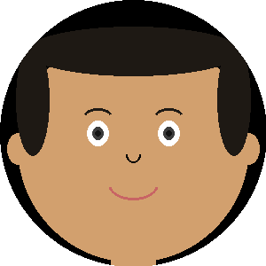
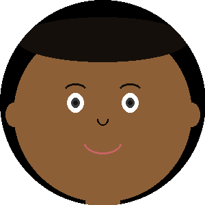
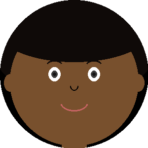

Optimize for daily use
Combine tools
Reduce different modes
For speed, remote unmoderated concept testing of discoverability, impressions, and usefulness. Two user groups; mega-menu tested after Tab Centre.
Two user groups in remote unmoderated sessions. Both have 10+ tabs open at a time and hadn't used vertical tabs in the past month.
Non-workspaces & non-tab group users
Workspaces & tab groups users
Concept verdict
Concept verdict
Go with Tab Centre (but carefully plan an escape hatch for stuck users). We de-risked the simpler design.
In our user research, 11 of 16 participants didn't even know the feature existed.
Only 3–4% of all Edge users have ever toggled vertical tabs on. There's a discoverability problem.
DSAT from accidentally turning it on doesn't explain all the engagement.
Switcher
Transient
How does Tab Central (Switcher & Transient variants) help horizontal tab users navigate tab clutter, discover different tab tools, and explore different states?
For depth of insights, we went with a week-long diary study. We randomly assigned 12 horizontal tab users to the Switcher or Transient experience. On the final day, they saw a recording demoing the unassigned version.
Implement the flag in Edge Dev.
Measure how satisfaction & usage patterns evolve throughout the week; collect impressions of specific tools & features (Tab search, Workspaces).
Compare Transient and Switcher.
Horizontal tab users with 10+ tabs open on average were randomly assigned to either the Switcher or Transient condition.




Switcher is not the trap we thought it was
About half our participants closed & opened Tab Central only as needed. 0 felt trapped in vertical.
We aimed for flexibility but achieved subtlety
Only 2 participants discovered and explored pinned vertical tabs during the study.
Three participants didn't pick up on the difference.
Daily satisfaction across the six-day diary (1=very negative, 5=very positive).
Used Tab Central about half of the days (vs. kept it closed)
Used Tab Central on average 5/6 days (vs. kept it closed)
Two participants dropped out after 1–2 days; if they had continued, Transient usage could have reached 4/6 days.
"I can leave it open so I can go back to it."
"I feel more organized and it's easier to maneuver."
"Now I see almost the whole title… it's less stressful."
"I guess the vertical tabs are fine."
"When they're vertical it's easier to scan with your eyes."
"Something I'll probably take forward… before I didn't see the use."
"Bills and videos didn't require a lot of tabs."
"It really helped me organize my thoughts for my ungrouped tabs."
"[Tab Central] is more effective for storing and organizing."
"Worked a 9hr shift… didn't have time to use it."
"I needed to organize 15+ websites into one group."
"I don't understand when I'd ever organize tabs vs. just getting rid of them."
"I just quickly closed them as they fell under the cursor."
"I used it mainly because I knew it was there."
"I simply don't use tabs the way this was invented to."
Recommendation
Build the simpler Switcher menu. Lower the engineering cost, help users discover vertical tabs.
It's now in product, serving 1.3M daily average users, helping people stay productive.
The team wanted to know whether to build a quick-switcher button that lets people toggle between workspaces without leaving their current window.
Quick Switcher
The design ask
Our leadership wants us to figure out what users like best — quick switcher within the Tab Action Menu, or outside the Tab Action Menu.
Edge Workspace users sampled via Qualtrics Panels (at least half also use Tab Groups)
285 Workspace users keep at least one Workspace open.
“Annoying to switch between them.”
“Too much to keep track of.”
“Context fragmentation and overhead of switching.”
“Slow browser responsiveness when using multiple tabs.”
“My pinned workspace at times freeze and takes a while to come up.”
“Sync issues across devices cause workflow delays.”
“Multiple workspaces with lots of tabs can slow down Edge or hog system memory.”
“Switching between them can feel a bit slow at times.”
“Sometimes it feels confusing to switch between workspaces and I forget which one has the tabs I need.”
“My pinned workspace at times freeze and takes a while to come up.”
“Sync issues across devices cause workflow delays.”
“Multiple workspaces with lots of tabs can slow down Edge or hog system memory.”
“Switching between them can feel a bit slow at times.”
“Sometimes it feels confusing to switch between workspaces and I forget which one has the tabs I need.”
“Managing too many tabs at once can be overwhelming, and switching between workspaces sometimes feels slow or confusing.”
Recommendation
Build Quick Switching if it won't compound other pain points (CPU load)
I highlighted a quick-switching risk, and laid the groundwork for future learnings.